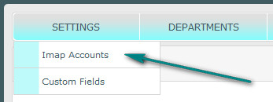
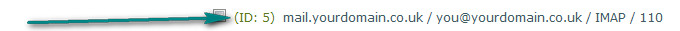
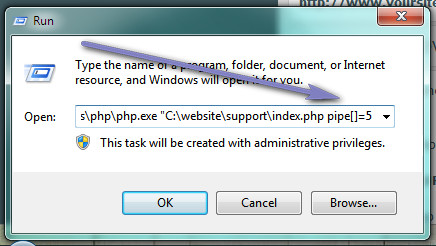
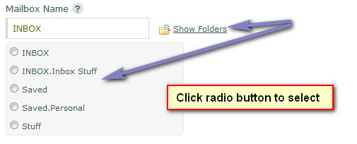
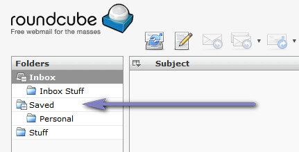

Documentation -


Documentation -

COMMERCIAL VERSION INCLUDES: - FREE upgrades for life - One time payment, NO subscriptions - ALL features unlocked and unlimited
What is E-Mail Piping?
E-Mail piping is the name for the technique of sending e-mail messages as an input to a program rather than appending the message to the mailbox file, allowing for real-time e-mail delivery and handling. To put it simply, anyone sending an e-mail to a specified address will automatically have a ticket opened for them, just as if they visited the site and entered their details on the new ticket page. For this option Maian Support utilises the PHP imap functions. It does not support local piping via control panels.
E-Mail Piping Setup
1. Create an e-mail address that will trigger opening support tickets. An example might be 'support@yoursite.com'. Note that you never need to access this
mailbox manually, so setting it up in an e-mail program is not needed. For the best results, set the mailbox to read incoming mail as plain text and NOT html. You should also make sure you have virus and spam filtering on this mailbox. Ideally at
the server level, so that very little spam reaches the mailbox. Mailwasher Enterprise Server is terrific, low cost and pretty effective against 90% of spam.
2. Log into your support admin and select 'Settings > Imap Accounts'. Create an account for the mailbox you just created.

3. Using another of your e-mail accounts, send 2 or 3 messages to the new mailbox. But don`t read them in your email program or via webmail.
4. Access the following url in your browser (replacing paths and domains where applicable):
http://www.yoursite.com/helpdesk/index.php?pipe=XX
Where XX is the imap ID number from your admin area. The ID is shown next to the imap account.

If all is working you should see tickets in your admin area and have received e-mails about new tickets. It is recommended you set to delete messages from the mailbox
after reading.
Once you have confirmed the imap fetch is working, you`ll need to set up a crontab (or cronjob) to access this file on a scheduled basis. See below. If the fetch
didn`t work, check your mail settings for the mailbox.
For any e-mails received via this method, the system will attempt to identify existing tickets by the ticket number in the e-mail subject. If the subject is tampered
with and the ticket number removed a new ticket will be opened. If this happens, use the merge option in your admin area.
Setting up Cronjob/Crontab
Once you are sure the e-mail fetching is working ok, you should set up a scheduled task so it runs automatically. On Windows this would be via Scheduled Tasks, on Linux
it would be a crontab or job. Ideally you`ll want to have this run pretty frequently in case tickets are started. Up to you.
Commands for crontabs vary from server to server. Here are a few that may work:
/usr/local/bin/php /home/admin/domains/yourdomain.co.uk/public_html/helpdesk/index.php?pipe=XX
php q /home/admin/domains/yourdomain.co.uk/public_html/helpdesk/index.php?pipe=XX
/usr/local/bin/php q /home/admin/domains/yourdomain.co.uk/public_html/helpdesk/index.php?pipe=XX
cmd C:\Windows\php\php.exe "C:\website\support\index.php?pipe=XX" (Windows)
Where XX is the imap ID number from your admin area.
Generally, query strings are for web browsers, so you may find using them via command line fails. If this is the case, omit the query string and append a pipe array as follows:
cmd C:\Windows\php\php.exe C:\website\support\index.php pipe[]=XX
So for example, if you were using id 5 you would do:
cmd C:\Windows\php\php.exe C:\website\support\index.php pipe[]=5
Note the space AFTER index.php and the command is not enclosed in quotes. DO NOT rename 'pipe[]' here, leave it exactly as shown with the relevant ID. Example in windows:

You can also try setting your cron to use the 'curl' trigger:
curl "http://www.yoursite.com/helpdesk/index.php?pipe=5"
Language Switching
If you are utilising the multi language options, you may have different support addresses for different languages. In this case you`ll want to load the relevant language email templates. To do
this append an additional var 'lang' to the cron strings:
If your command line functions work with query strings do:
index.php?pipe=XX&lang=XX
Where XX is the language folder name from your 'templates/language/' folder.
If you are using the pipe[] option, do the following:
cmd C:\Windows\php\php.exe C:\website\support\index.php pipe[]=XX lang[]=XX
Where XX is the language folder name from your 'templates/language/' folder. NOTE the spaces between each command var.
So, your command would look something like:
index.php?pipe=5&lang=german
cmd C:\Windows\php\php.exe C:\website\support\index.php pipe[]=5 lang[]=german
If the language folder doesn`t exist, it reverts to the default language.
Piping Query String Security Change
The default query string for accessing manually via a browser is 'pipe' and is accessed as 'pipe=XX'. Where XX is the imap ID number from your admin area. It is recommended you change this to another word when you go live to stop any abuse being
aimed at this url. Open the 'control/user-defined/defined.inc.php' file and update the value of 'IMAP_URL_PARAMETER'.
Example:
define('IMAP_URL_PARAMETER', 'newcode');
http://www.yoursite.com/helpdesk/index.php?newcode=XX
Cron Trigger Override
If the system fails when you setup the cron, and ioncube returns an error saying the system is "encoded for another domain", you can set up an override:
1: Create a new .php file in a text editor with the following code:
<?php
$ch = curl_init();
curl_setopt($ch, CURLOPT_URL, "http://www.yoursite.com/helpdesk/index.php?pipe=XX");
curl_setopt ($ch, CURLOPT_HEADER, 0);
curl_setopt($ch, CURLOPT_RETURNTRANSFER, 1);
$output = curl_exec($ch);
curl_close($ch);
?>
2: Where XX is the imap ID number from your admin area. Make sure the url path points to your own 'index.php' file. Save and upload alongside main index.php file.
3: Change your cron job in your control panel to access this new .php file. This will send a trigger to the 'index.php' file. Repeat the above process for each imap cron.
NOTE: CURL must be installed for this to run.
You can also try setting your cron to:
curl "http://www.yoursite.com/helpdesk/index.php?pipe=2"
Remote Piping
Maian Support does not handle remote piping.
Adding Imap Accounts
The free version only allows a single imap account. The commercial version allows unlimited accounts to be added.
Enable Imap Account
Enable or disable imap account
Mailbox Protocol
Imap and Pop3 protocols are supported. Specify your preference. Imap is recommended.
Mailbox Password
Enter mailbox password.
Mailbox Port
Enter mailbox port number. Usually 110 for pop3 or 143 for imap. Check with your host.
Mailbox Name
Enter name of mailbox. A common example would be "inbox". Specifying an invalid name will prevent the system from working. Use the "Show Folders" option to display mailbox folders.

If this doesn`t work, log into your mail account for folder names. The following screenshot is using the Roundcube web mail software:

Mailbox Flags
If applicable, enter mailbox flag. Entering invalid flag or omitting required flag will cause the system to fail when fetching mail.
Flag must begin with a slash (/). It is recommended the flag "/novalidate-cert" be used in most cases.
If you aren`t sure, leave as is. More information here on the PHP website.
Accept Attachments
If tickets are started via email, do you want to accept attachments? If yes, the attachment restrictions on settings page apply.
It is vitally important you have virus/spam filtering on the mail box you are using for e-mail fetching. See the docs for more information.
After Reading, Move Message to
After the message has been read, do you wish to archive the message in another folder? This can be any folder within your mailbox, including custom folders or Trash/Deleted Items. Sub folders should be concatenated with a dot or period symbol, ie: Inbox.Sent.
Use the "Show Folders" option to display mailbox folders.
If left blank, message is deleted without archiving (if you find this isn`t the case, you must add a folder to move the messages to. This will prevent duplicate tickets).
Note the move option works ONLY with imap accounts
Maximum Messages to Fetch
How many messages do you want to fetch each time the mailbox is accessed? Max 999.
Enable SSL
Are you connecting to the mailbox using ssl?
Assign to Department
Specify which department is to be assigned to tickets opened via e-mail.
Default Priority
Specify the default priority level for tickets started via e-mail.
Imap Reply-to E-Mail Address
This is your reply to e-mail address for imap messages. If set to same as mailbox thats being read, this enables visitors to reply directly in their email software back to the imap account. If this happens, the system will attempt to assign the reply to the same ticket.
Set to another e-mail not to have replies sent to imap address.
Check Mail/Edit/Delete
Use the options provided to edit or delete imap accounts.
Use the 'Check Mail' option to test your mailbox connection and run the imap functions directly instead of waiting for the next cron.
Enable Debug Mode
If you are having issues with your mail account and all you see is a whitescreen when using the 'Check Mail' option, you can enable the debug mode to hopefully display the reason for the the issue:
To enable this, open the 'control/user-defined/defined.inc.php' file in a text editor and set 'ENABLE_IMAP_DEBUG' to 1. Remember to reset it when all is working. If this doesn`t help, check your server mail logs.
Help Tips
The same or additional information may be provided by hovering your cursor over the  image next to each heading in the admin area if applicable.
image next to each heading in the admin area if applicable.